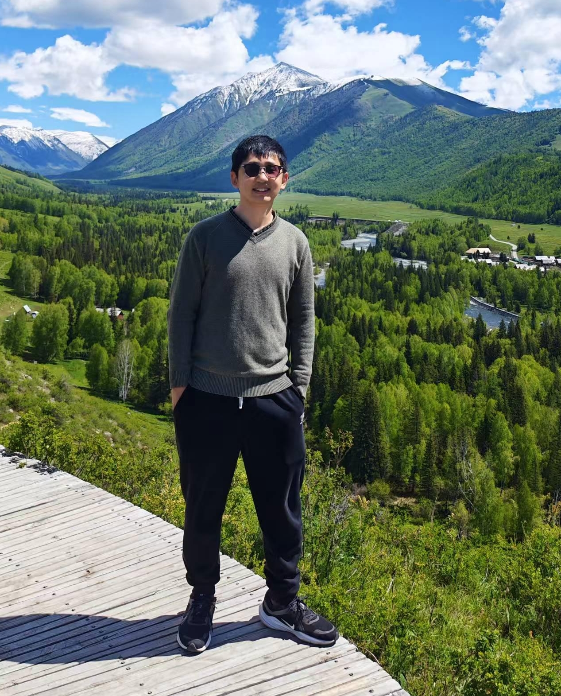

|
 |
Ziyue Zheng
zzheng989@connect.hkust-gz.edu.cn
|
我是香港科技大学（广州）微电子学域的博士研究生，师从吕杨迪教授。 我于香港科技大学（广州）获得微电子学哲学硕士学位，于厦门大学获得数字媒体技术理学学士学位。
我即将于 2026 年 10 月加入深圳理工大学算力微电子学院。对硕士、博士、博士后以及研究助理教授职位有兴趣的同学，欢迎通过 zzy981026@gmail.com 与我联系。
研究兴趣：
I am currently a PhD student in the Microelectronics Thrust at HKUST(GZ), supervised by Prof. Yangdi Lyu. I received my MPhil in Microelectronics from HKUST(GZ) and my Bachelor's degree in Digital Media Technology from Xiamen University.
I will be joining the School of Computing and Microelectronics at Shenzhen University of Technology around October 2026. Those interested in MS, PhD, Postdoctoral, or Research Assistant Professor positions are welcome to reach out at zzy981026@gmail.com.
Research Interests: